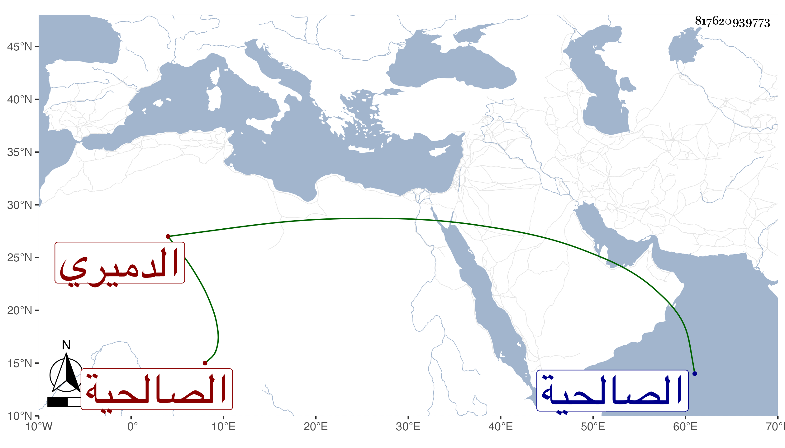

0902Sakhawi.DawLamic.ITO20230111-ara1.EIS1600.817620939773
Biography ID: 817620939773
الدميري بفتح أوله قرية من الكمال محمد بن موسى بن عيسى والزين محمد بن الشمس محمد بن التاج أحمد بن عبد الملك وابنه البدر محمد وابنه الزين محمد ورأيت بخطى في موضع آخر الزين محمد بن الشمس محمد بن محمد بن أحمد ابن عبد الملك والبدر محمد بن الشمس محمد بن محمد وأظنه أخوه وهو أخو زوجة البدر محمد بن محمد بن بدير العباسي العجمي صاحب البديرية أو حفيد صاحبها وللبدر الأول ابن هو الزين محمد ويحرر مع المذكورين قبله وقريبهم المحيوي عبد القادربن الشمس محمد بن العز عبد الملك بن التاج أحمد يلتقي مع الذين قبله في التاج وأبوه وهم مالكيون ولعبد القادر ابن اسمه البدر محمد شاب حنفي والبدر محمد بن المحب أحمد ابن الصفي محمد العمري المعتقد وفي الدمامرة من المالكية أيضا الجمال عبد الله بن عبد الملك بن إبرهيم شاهد بباب الصالحية وليس هو بقريب لابن عبد الملك الماضي وإبرهيم بن عمر بن شعيب أحد النواب والموقعين وابنه يحيى ممن حفظ كتبا وزوجه لابنة ابن الشيخ الجوهري وأمه ابنة ابن تمرية وكذا في الدمامرة البدر محمد بن يوسف الملقب كتكوت وأخوه علي وابنه .
